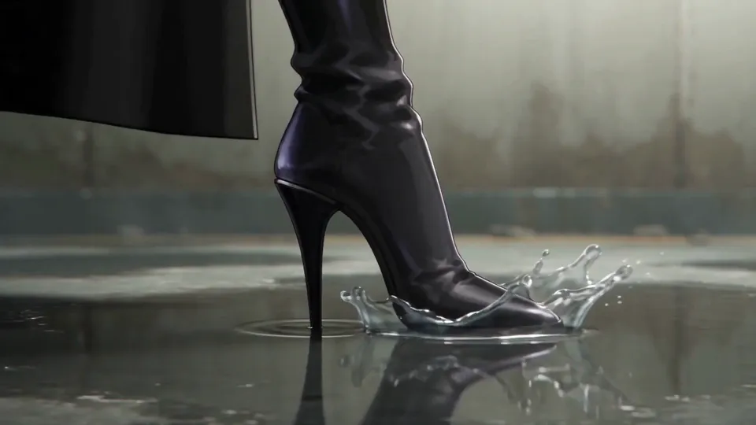
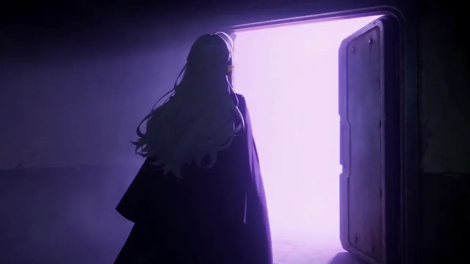
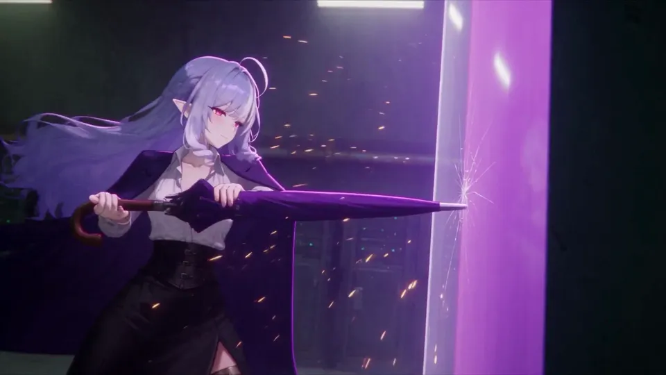
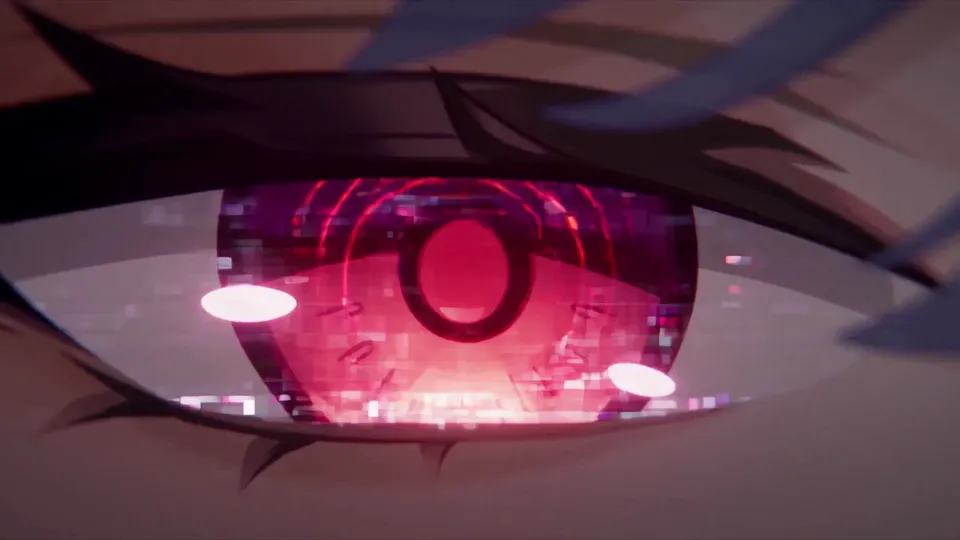

AI studioChapter 5
Video
Three services turn a picture or a line of text into a short clip. They differ on what they allow, how long a clip runs, what a second costs and who may use the result. One of them also runs at home.
- Entry
- A5
- Category
- AI studio
- Checked
- Reading
- 7 min
- Sections
- 6
Evidence
In 30 seconds
- Grok Imagine, Seedance and MiniMax-H3 all make clips of about 15 seconds. Seedance 2.5 goes to 30.
- On the APIs, a second of video costs from about USD 0.02 to USD 0.78, depending on the model and the resolution.
- Grok’s consumer terms mention 18+ content. Seedance and Hailuo forbid sexually explicit content.
- Commercial use differs by service and by plan. Read the terms of the exact route you use.
- MiniMax-H3 has open weights, but its licence excludes the EU, the UK, South Korea and the USA.
- A short clip works when it loops, reads without sound and stays in character.
You will learn
- How long a clip each service makes, and at what resolution.
- What a second of video costs on each API.
- What each provider’s rules say about suggestive and sexual content.
- Who may use the clips commercially.
- What running MiniMax-H3 at home involves, and what its licence says.
- What makes a short clip work for a persona.
Three services, side by side
Scroll the table sideways
| Feature | Grok Imagine video (xAI) | Seedance (ByteDance) | MiniMax-H3 (MiniMax, Hailuo app) |
|---|---|---|---|
| Longest clip | 15 seconds | 15 seconds on 2.0, 30 on 2.5 | 15 seconds |
| Top resolution | 1080p | 4K on 2.0, 1080p on 2.5 | 2K |
| API price per second | USD 0.02 to 0.25 | USD 0.07 to 0.78 on 2.0 | USD 0.025 to 0.13 |
| Sexual content | 18+ setting in the app, no pornographic use of real people | No nudity, even drawn | No sexually explicit material |
| Commercial use | Allowed by the consumer FAQ | Unclear: you own the output, but the service is non-commercial | Paid plans yes (2025 terms), free plan unclear |
| Runs at home | No | No | Yes, open weights |
Prices were read on 2026-11-07 and change often. UnverifiedPlausible, not proven yet. No local version of Grok Imagine or Seedance turned up on any official page I read. UnverifiedPlausible, not proven yet.
Grok Imagine video
xAI’s video API makes clips of up to 15 seconds, with the aspect ratio and resolution you pick. VerifiedChecked against the original source.xAI video generation guide (opens in a new tab) Accessed 7 November 2026. The 1.5 model makes native 1080p from text or a picture, with lip-synced speech. VerifiedChecked against the original source.xAI video generation guide (opens in a new tab) Accessed 7 November 2026.
Price per second, xAI API
USD 0.08 to 0.25
Grok Imagine video 1.5, from 480p to 1080p. 720p is USD 0.14.
VerifiedChecked against the original source.xAI API pricing (opens in a new tab) Accessed 7 November 2026.
USD 0.05 to 0.07
The base video model, at 480p and 720p.
VerifiedChecked against the original source.xAI API pricing (opens in a new tab) Accessed 7 November 2026.
USD 0.02 to 0.14
Video 1.5 Lite, from 480p to 1080p.
VerifiedChecked against the original source.xAI API pricing (opens in a new tab) Accessed 7 November 2026.
So 10 seconds at 720p on the 1.5 model cost USD 1.40. Vivian’s field notesFirst-hand experience, not a study.
The rules. Everything the API makes goes through a content policy review. VerifiedChecked against the original source.xAI video generation guide (opens in a new tab) Accessed 7 November 2026. xAI’s consumer terms mention 18+ adult content and a setting to limit it. VerifiedChecked against the original source.xAI Terms of Service (consumer) (opens in a new tab) Accessed 7 November 2026. Its use policy bans depicting real people’s likenesses in a pornographic manner. VerifiedChecked against the original source.xAI Acceptable Use Policy (opens in a new tab) Accessed 7 November 2026. In August 2025, TechSpot reported a “Spicy” mode in Grok Imagine meant for NSFW output. ReportedStated by a serious secondary source read in full.Elon Musk’s Grok AI gets “Spicy” mode so users can generate explicit videos (opens in a new tab) Accessed 7 November 2026. The xAI pages I read today don’t describe that mode. UnverifiedPlausible, not proven yet.
Who owns the clip. xAI’s consumer FAQ says you own Grok’s outputs and may use them commercially. VerifiedChecked against the original source.Consumer FAQs (opens in a new tab) Accessed 7 November 2026. Pictures and videos from the app carry a Grok watermark, and no setting removes it. VerifiedChecked against the original source.Grok FAQ (opens in a new tab) Accessed 7 November 2026. Removing or hiding it breaks xAI’s use policy. VerifiedChecked against the original source.Grok FAQ (opens in a new tab) Accessed 7 November 2026. Whether API clips carry the same watermark isn’t on any page I read. UnverifiedPlausible, not proven yet.
Seedance
Seedance is ByteDance’s video model. Developers reach it through BytePlus, and the public through the Dreamina app. VerifiedChecked against the original source.Create a video generation task (ModelArk API reference) (opens in a new tab) Accessed 7 November 2026.Seedance 2.5 Launch: Now Available on Dreamina (opens in a new tab) Accessed 7 November 2026. On the API, Seedance 2.0 makes clips of 4 to 15 seconds and Seedance 2.5 of 4 to 30. VerifiedChecked against the original source.Create a video generation task (ModelArk API reference) (opens in a new tab) Accessed 7 November 2026. Dreamina also says 2.5 makes clips up to 30 seconds long. VerifiedChecked against the original source.Seedance 2.5 Launch: Now Available on Dreamina (opens in a new tab) Accessed 7 November 2026.
BytePlus’s own article gives prices per five-second clip on Seedance 2.0: USD 0.35 at 480p and USD 3.89 at native 4K. VerifiedChecked against the original source.Seedance 2.0 pricing article (opens in a new tab) Accessed 7 November 2026. At 720p, five seconds cost USD 0.76 on the standard model. VerifiedChecked against the original source.Seedance 2.0 pricing article (opens in a new tab) Accessed 7 November 2026. To switch the 2.0 models on, your BytePlus balance must be above USD 30, or you buy a prepaid pack. VerifiedChecked against the original source.Seedance 2.0 series (ModelArk documentation) (opens in a new tab) Accessed 7 November 2026.
The rules. Dreamina doesn’t allow nudity, sexual activity or sexually explicit content. VerifiedChecked against the original source.Dreamina Community Guidelines (opens in a new tab) Accessed 7 November 2026. Its gallery rules also exclude nudity in drawings and sexually suggestive digital art. VerifiedChecked against the original source.Dreamina Community Guidelines (opens in a new tab) Accessed 7 November 2026. On the API, a filter checks your request and another checks what the model makes. VerifiedChecked against the original source.Why was my request rejected for sensitive or non-compliant content? (opens in a new tab) Accessed 7 November 2026. Some of these safety policies can’t be switched off. VerifiedChecked against the original source.Why was my request rejected for sensitive or non-compliant content? (opens in a new tab) Accessed 7 November 2026. Seedance 2.0 doesn’t accept reference pictures or videos with real human faces. VerifiedChecked against the original source.Seedance 2.0 series (ModelArk documentation) (opens in a new tab) Accessed 7 November 2026. Whether a drawn face counts isn’t stated, and I haven’t tested it. UnverifiedPlausible, not proven yet.
Who owns the clip. Dreamina’s terms say you own what you upload and what it makes, if you follow its terms. VerifiedChecked against the original source.Dreamina Terms of Service (opens in a new tab) Accessed 7 November 2026. The same terms say the service is generally for private, non-commercial use. VerifiedChecked against the original source.Dreamina Terms of Service (opens in a new tab) Accessed 7 November 2026. CapCut, which runs Dreamina, writes that commercial use doesn’t come automatically with every clip. VerifiedChecked against the original source.Seedance 2.0 Mini commercial use rights (opens in a new tab) Accessed 7 November 2026. On the API, the watermark is off by default, and switched on it reads “AI Generated” in the lower right corner. VerifiedChecked against the original source.Create a video generation task (ModelArk API reference) (opens in a new tab) Accessed 7 November 2026.
In my experience, Seedance is for clean clips: a persona turning to the camera, a wave, a teaser for a new picture. Its rules leave no room for anything suggestive. Vivian’s field notesFirst-hand experience, not a study.
A longer film, made from chained clips
One clip is short, so a film is a chain of clips. This is how I made the film below with Seedance 2.0, from clips of 15 seconds joined one after the other. Vivian’s field notesFirst-hand experience, not a study.
A film made from chained clips





Made by Vivian with Seedance 2.0. The sound starts muted.Vivian’s field notesFirst-hand experience, not a study.
How I chain clips
Make the first clip until its look is exactly the one you want. That clip sets the style of the whole film.
Take the last frame of that clip and use it as the first frame of the next one.
Add the first clip as a style example to every new clip, so the faces and colours don’t drift.
Repeat for each clip, then join them in order.
The shared frame keeps each join smooth, and the style example keeps the film looking like one piece. A clip that drifts is cheaper to redo than to fix in the edit. Vivian’s field notesFirst-hand experience, not a study.
MiniMax-H3, online and at home
MiniMax’s video model is MiniMax-H3 in the API documentation and MiniMax H3 in its licence. VerifiedChecked against the original source.MiniMax video generation guide (opens in a new tab) Accessed 7 November 2026.MiniMax H3 Community License Agreement (opens in a new tab) Accessed 7 November 2026. MiniMax calls it an open, general-purpose video model. VerifiedChecked against the original source.MiniMax video generation guide (opens in a new tab) Accessed 7 November 2026.
Online. The API makes clips of 4 to 15 seconds, at 768P or 2K. VerifiedChecked against the original source.MiniMax video generation guide (opens in a new tab) Accessed 7 November 2026. In the Hailuo app, it makes 5 to 15 second clips at 24 frames a second, with stereo sound. VerifiedChecked against the original source.MiniMax H3 Model (Hailuo AI) (opens in a new tab) Accessed 7 November 2026.
Price per second, MiniMax API
USD 0.08 to 0.13
MiniMax-H3, at 768P and 2K.
VerifiedChecked against the original source.MiniMax video pricing (pay-as-you-go) (opens in a new tab) Accessed 7 November 2026.
USD 0.04 to 0.06
MiniMax-H3-Highspeed, at 480P and 768P.
VerifiedChecked against the original source.MiniMax video pricing (pay-as-you-go) (opens in a new tab) Accessed 7 November 2026.
USD 0.025 to 0.04
MiniMax-H3-Lite, at 480P and 768P.
VerifiedChecked against the original source.MiniMax video pricing (pay-as-you-go) (opens in a new tab) Accessed 7 November 2026.
So 10 seconds of MiniMax-H3 cost USD 0.80 at 768P and USD 1.30 at 2K. Vivian’s field notesFirst-hand experience, not a study. In the Hailuo app, MiniMax estimates about USD 0.073 to 0.120 a second, depending on your plan. VerifiedChecked against the original source.MiniMax H3 Model (Hailuo AI) (opens in a new tab) Accessed 7 November 2026.
The Hailuo terms forbid content that promotes sexually explicit or pornographic material. VerifiedChecked against the original source.Hailuo AI Terms of Service for Video and Image Tools (opens in a new tab) Accessed 7 November 2026. The hosted service may block anything suspected of being pornographic. VerifiedChecked against the original source.MiniMax-H3 model card (opens in a new tab) Accessed 7 November 2026.
Hailuo doesn’t claim ownership of what you make. VerifiedChecked against the original source.Hailuo AI Terms of Service for Video and Image Tools (opens in a new tab) Accessed 7 November 2026. Its terms also say you may not use any part of the service for commercial purposes, and that commercial use of what you make is at your own risk. VerifiedChecked against the original source.Hailuo AI Terms of Service for Video and Image Tools (opens in a new tab) Accessed 7 November 2026. The subscription terms of July 2025 give paid users the right to use their clips commercially. VerifiedChecked against the original source.Hailuo AI Video Subscription Service Terms (opens in a new tab) Accessed 7 November 2026. Under those terms, free users download clips with a watermark. VerifiedChecked against the original source.Hailuo AI Video Subscription Service Terms (opens in a new tab) Accessed 7 November 2026. Those terms are older than H3, so check the current ones. UnverifiedPlausible, not proven yet.
At home. MiniMax has released the complete weights. VerifiedChecked against the original source.MiniMax-H3 model card (opens in a new tab) Accessed 7 November 2026. At launch, on 2026-07-31, it said the weights would come in the coming days. VerifiedChecked against the original source.MiniMax H3 launch post (opens in a new tab) Accessed 7 November 2026. The core is a 33-billion-parameter model. VerifiedChecked against the original source.MiniMax-H3 model card (opens in a new tab) Accessed 7 November 2026. No minimum card is published. UnverifiedPlausible, not proven yet. The only hint is an example server command that uses four GPUs. VerifiedChecked against the original source.MiniMax-H3 model card (opens in a new tab) Accessed 7 November 2026. By my maths, 33 billion parameters stored in BF16 already take about 66 GB, far more than a gaming card holds. Vivian’s field notesFirst-hand experience, not a study. The hosted safety filter isn’t part of the open release. VerifiedChecked against the original source.MiniMax-H3 model card (opens in a new tab) Accessed 7 November 2026. Whether the open weights produce 2K without that hosted step isn’t stated. UnverifiedPlausible, not proven yet.
The licence. The MiniMax H3 Community License is free and limited. VerifiedChecked against the original source.MiniMax H3 Community License Agreement (opens in a new tab) Accessed 7 November 2026. It covers the whole world except the European Union, the United Kingdom, South Korea and the United States. VerifiedChecked against the original source.MiniMax H3 Community License Agreement (opens in a new tab) Accessed 7 November 2026. People there have a separate application form. VerifiedChecked against the original source.MiniMax-H3 model card (opens in a new tab) Accessed 7 November 2026. A business earning more than USD 20 million a year needs written permission first. VerifiedChecked against the original source.MiniMax H3 Community License Agreement (opens in a new tab) Accessed 7 November 2026. A commercial product that uses it must show the name “MiniMax H3” in its interface. VerifiedChecked against the original source.MiniMax H3 Community License Agreement (opens in a new tab) Accessed 7 November 2026.
Its use policy forbids bypassing MiniMax’s safety guardrails and any use that harms minors. VerifiedChecked against the original source.MiniMax H3 Community License Agreement (opens in a new tab) Accessed 7 November 2026. It says anything you post in public must be clearly labelled as machine-made. VerifiedChecked against the original source.MiniMax H3 Community License Agreement (opens in a new tab) Accessed 7 November 2026. It has no line about sexual content, but it does ban uses that disregard the moral standards of other countries or regions, which is broad. VerifiedChecked against the original source.MiniMax H3 Community License Agreement (opens in a new tab) Accessed 7 November 2026.
Myth
A model that runs at home has no rules.
Fact
The licence and its use policy come with the weights. Running it on your own card doesn’t take you outside them. Vivian’s field notesFirst-hand experience, not a study.
Myth
If I own the clip, I can sell it anywhere.
Fact
Owning it and being allowed to use it commercially are two different lines in the terms. Dreamina gives you the first and calls its service non-commercial. VerifiedChecked against the original source.Dreamina Terms of Service (opens in a new tab) Accessed 7 November 2026.
What makes a short clip work
A clip for a persona is a few seconds that people watch again. These are my field notes. Vivian’s field notesFirst-hand experience, not a study.
Six things I check
Loop
Make the last frame match the first, so the clip plays forever without a jump. Vivian’s field notesFirst-hand experience, not a study. MiniMax-H3 has a first and last frame mode for this. VerifiedChecked against the original source.MiniMax video pricing (pay-as-you-go) (opens in a new tab) Accessed 7 November 2026.
Length
Five to eight seconds is plenty. Each second costs money and gives the model more room to go wrong. Vivian’s field notesFirst-hand experience, not a study.
Format
Vertical for phones. Vivian’s field notesFirst-hand experience, not a study. Hailuo offers vertical ratios. VerifiedChecked against the original source.MiniMax H3 Model (Hailuo AI) (opens in a new tab) Accessed 7 November 2026.
Caption
One short line burned into the picture, readable without sound. Most people scroll with the sound off. Vivian’s field notesFirst-hand experience, not a study.
Sound
Grok Imagine 1.5 and MiniMax-H3 make sound with the picture. VerifiedChecked against the original source.xAI video generation guide (opens in a new tab) Accessed 7 November 2026.MiniMax H3 Model (Hailuo AI) (opens in a new tab) Accessed 7 November 2026. Keep one voice and one kind of music for your persona, and drop the sound when it doesn’t fit. Vivian’s field notesFirst-hand experience, not a study.
Label
Say it’s AI-made, on every platform. Vivian’s field notesFirst-hand experience, not a study. The MiniMax H3 licence requires it for anything posted in public. VerifiedChecked against the original source.MiniMax H3 Community License Agreement (opens in a new tab) Accessed 7 November 2026.
Start from a still you already like, made as in Images at home. The clip keeps the face, and you only have to get the movement right. Vivian’s field notesFirst-hand experience, not a study. Keep the original clip and its recipe, and post copies. How to mark adult posts on X is in Posting and workflows.
Remember it
- Clips run about 15 seconds. Seedance 2.5 goes to 30.
- Check the price per second at the resolution you’ll really use.
- Grok’s terms mention 18+ content. Seedance and Hailuo don’t allow sexual content.
- Owning a clip and using it commercially are two separate questions.
- MiniMax-H3 runs at home only on big hardware, and its licence excludes four regions.
- Loop it, caption it, label it as AI.
What you did.
Check it
Every claim with its evidence level and its sources.
Evidence levels
- Verified
- Checked against the original source.
- Reported
- Stated by a serious secondary source read in full.
- Community
- Widely said in the scene; no document proves it.
- Vivian’s field notes
- First-hand experience, not a study.
- Unverified
- Plausible, not proven yet.
Prices were read on 2026-11-07 and change often.
UnverifiedPlausible, not proven yet.
No local version of Grok Imagine or Seedance turned up on any official page I read.
UnverifiedPlausible, not proven yet.
XAI’s video API makes clips of up to 15 seconds, with the aspect ratio and resolution you pick.
VerifiedChecked against the original source.xAI video generation guide (opens in a new tab) Accessed 7 November 2026.xAI video generation guide (opens in a new tab)Accessed 7 November 2026
The 1.5 model makes native 1080p from text or a picture, with lip-synced speech.
VerifiedChecked against the original source.xAI video generation guide (opens in a new tab) Accessed 7 November 2026.xAI video generation guide (opens in a new tab)Accessed 7 November 2026
720p is USD 0.14.
VerifiedChecked against the original source.xAI API pricing (opens in a new tab) Accessed 7 November 2026.xAI API pricing (opens in a new tab)Accessed 7 November 2026
The base video model, at 480p and 720p.
VerifiedChecked against the original source.xAI API pricing (opens in a new tab) Accessed 7 November 2026.xAI API pricing (opens in a new tab)Accessed 7 November 2026
Video 1.5 Lite, from 480p to 1080p.
VerifiedChecked against the original source.xAI API pricing (opens in a new tab) Accessed 7 November 2026.xAI API pricing (opens in a new tab)Accessed 7 November 2026
So 10 seconds at 720p on the 1.5 model cost USD 1.40.
Vivian’s field notesFirst-hand experience, not a study.
Everything the API makes goes through a content policy review.
VerifiedChecked against the original source.xAI video generation guide (opens in a new tab) Accessed 7 November 2026.xAI video generation guide (opens in a new tab)Accessed 7 November 2026
XAI’s consumer terms mention 18+ adult content and a setting to limit it.
VerifiedChecked against the original source.xAI Terms of Service (consumer) (opens in a new tab) Accessed 7 November 2026.xAI Terms of Service (consumer) (opens in a new tab)Accessed 7 November 2026
Its use policy bans depicting real people’s likenesses in a pornographic manner.
VerifiedChecked against the original source.xAI Acceptable Use Policy (opens in a new tab) Accessed 7 November 2026.xAI Acceptable Use Policy (opens in a new tab)Accessed 7 November 2026
In August 2025, TechSpot reported a “Spicy” mode in Grok Imagine meant for NSFW output.
ReportedStated by a serious secondary source read in full.Elon Musk’s Grok AI gets “Spicy” mode so users can generate explicit videos (opens in a new tab) Accessed 7 November 2026.Elon Musk’s Grok AI gets “Spicy” mode so users can generate explicit videos (opens in a new tab)Accessed 7 November 2026
Show all 84 claims
The xAI pages I read today don’t describe that mode.
UnverifiedPlausible, not proven yet.
XAI’s consumer FAQ says you own Grok’s outputs and may use them commercially.
VerifiedChecked against the original source.Consumer FAQs (opens in a new tab) Accessed 7 November 2026.Consumer FAQs (opens in a new tab)Accessed 7 November 2026
Pictures and videos from the app carry a Grok watermark, and no setting removes it.
VerifiedChecked against the original source.Grok FAQ (opens in a new tab) Accessed 7 November 2026.Grok FAQ (opens in a new tab)Accessed 7 November 2026
Removing or hiding it breaks xAI’s use policy.
VerifiedChecked against the original source.Grok FAQ (opens in a new tab) Accessed 7 November 2026.Grok FAQ (opens in a new tab)Accessed 7 November 2026
Whether API clips carry the same watermark isn’t on any page I read.
UnverifiedPlausible, not proven yet.
Developers reach it through BytePlus, and the public through the Dreamina app.
VerifiedChecked against the original source.Create a video generation task (ModelArk API reference) (opens in a new tab) Accessed 7 November 2026.Seedance 2.5 Launch: Now Available on Dreamina (opens in a new tab) Accessed 7 November 2026.Create a video generation task (ModelArk API reference) (opens in a new tab)Accessed 7 November 2026Seedance 2.5 Launch: Now Available on Dreamina (opens in a new tab)Accessed 7 November 2026
On the API, Seedance 2.0 makes clips of 4 to 15 seconds and Seedance 2.5 of 4 to 30.
VerifiedChecked against the original source.Create a video generation task (ModelArk API reference) (opens in a new tab) Accessed 7 November 2026.Create a video generation task (ModelArk API reference) (opens in a new tab)Accessed 7 November 2026
Dreamina also says 2.5 makes clips up to 30 seconds long.
VerifiedChecked against the original source.Seedance 2.5 Launch: Now Available on Dreamina (opens in a new tab) Accessed 7 November 2026.Seedance 2.5 Launch: Now Available on Dreamina (opens in a new tab)Accessed 7 November 2026
BytePlus’s own article gives prices per five-second clip on Seedance 2.0: USD 0.35 at 480p and USD 3.89 at native 4K.
VerifiedChecked against the original source.Seedance 2.0 pricing article (opens in a new tab) Accessed 7 November 2026.Seedance 2.0 pricing article (opens in a new tab)Accessed 7 November 2026
At 720p, five seconds cost USD 0.76 on the standard model.
VerifiedChecked against the original source.Seedance 2.0 pricing article (opens in a new tab) Accessed 7 November 2026.Seedance 2.0 pricing article (opens in a new tab)Accessed 7 November 2026
To switch the 2.0 models on, your BytePlus balance must be above USD 30, or you buy a prepaid pack.
VerifiedChecked against the original source.Seedance 2.0 series (ModelArk documentation) (opens in a new tab) Accessed 7 November 2026.Seedance 2.0 series (ModelArk documentation) (opens in a new tab)Accessed 7 November 2026
Dreamina doesn’t allow nudity, sexual activity or sexually explicit content.
VerifiedChecked against the original source.Dreamina Community Guidelines (opens in a new tab) Accessed 7 November 2026.Dreamina Community Guidelines (opens in a new tab)Accessed 7 November 2026
Its gallery rules also exclude nudity in drawings and sexually suggestive digital art.
VerifiedChecked against the original source.Dreamina Community Guidelines (opens in a new tab) Accessed 7 November 2026.Dreamina Community Guidelines (opens in a new tab)Accessed 7 November 2026
On the API, a filter checks your request and another checks what the model makes.
VerifiedChecked against the original source.Why was my request rejected for sensitive or non-compliant content? (opens in a new tab) Accessed 7 November 2026.Why was my request rejected for sensitive or non-compliant content? (opens in a new tab)Accessed 7 November 2026
Some of these safety policies can’t be switched off.
VerifiedChecked against the original source.Why was my request rejected for sensitive or non-compliant content? (opens in a new tab) Accessed 7 November 2026.Why was my request rejected for sensitive or non-compliant content? (opens in a new tab)Accessed 7 November 2026
Seedance 2.0 doesn’t accept reference pictures or videos with real human faces.
VerifiedChecked against the original source.Seedance 2.0 series (ModelArk documentation) (opens in a new tab) Accessed 7 November 2026.Seedance 2.0 series (ModelArk documentation) (opens in a new tab)Accessed 7 November 2026
Whether a drawn face counts isn’t stated, and I haven’t tested it.
UnverifiedPlausible, not proven yet.
Dreamina’s terms say you own what you upload and what it makes, if you follow its terms.
VerifiedChecked against the original source.Dreamina Terms of Service (opens in a new tab) Accessed 7 November 2026.Dreamina Terms of Service (opens in a new tab)Accessed 7 November 2026
The same terms say the service is generally for private, non-commercial use.
VerifiedChecked against the original source.Dreamina Terms of Service (opens in a new tab) Accessed 7 November 2026.Dreamina Terms of Service (opens in a new tab)Accessed 7 November 2026
CapCut, which runs Dreamina, writes that commercial use doesn’t come automatically with every clip.
VerifiedChecked against the original source.Seedance 2.0 Mini commercial use rights (opens in a new tab) Accessed 7 November 2026.Seedance 2.0 Mini commercial use rights (opens in a new tab)Accessed 7 November 2026
On the API, the watermark is off by default, and switched on it reads “AI Generated” in the lower right corner.
VerifiedChecked against the original source.Create a video generation task (ModelArk API reference) (opens in a new tab) Accessed 7 November 2026.Create a video generation task (ModelArk API reference) (opens in a new tab)Accessed 7 November 2026
Its rules leave no room for anything suggestive.
Vivian’s field notesFirst-hand experience, not a study.
This is how I made the film below with Seedance 2.0, from clips of 15 seconds joined one after the other.
Vivian’s field notesFirst-hand experience, not a study.
The sound starts muted.
Vivian’s field notesFirst-hand experience, not a study.
The shared frame keeps each join smooth, and the style example keeps the film looking like one piece.
Vivian’s field notesFirst-hand experience, not a study.
A clip that drifts is cheaper to redo than to fix in the edit.
Vivian’s field notesFirst-hand experience, not a study.
MiniMax’s video model is MiniMax-H3 in the API documentation and MiniMax H3 in its licence.
VerifiedChecked against the original source.MiniMax video generation guide (opens in a new tab) Accessed 7 November 2026.MiniMax H3 Community License Agreement (opens in a new tab) Accessed 7 November 2026.MiniMax video generation guide (opens in a new tab)Accessed 7 November 2026MiniMax H3 Community License Agreement (opens in a new tab)Accessed 7 November 2026
MiniMax calls it an open, general-purpose video model.
VerifiedChecked against the original source.MiniMax video generation guide (opens in a new tab) Accessed 7 November 2026.MiniMax video generation guide (opens in a new tab)Accessed 7 November 2026
The API makes clips of 4 to 15 seconds, at 768P or 2K.
VerifiedChecked against the original source.MiniMax video generation guide (opens in a new tab) Accessed 7 November 2026.MiniMax video generation guide (opens in a new tab)Accessed 7 November 2026
In the Hailuo app, it makes 5 to 15 second clips at 24 frames a second, with stereo sound.
VerifiedChecked against the original source.MiniMax H3 Model (Hailuo AI) (opens in a new tab) Accessed 7 November 2026.MiniMax H3 Model (Hailuo AI) (opens in a new tab)Accessed 7 November 2026
MiniMax-H3, at 768P and 2K.
VerifiedChecked against the original source.MiniMax video pricing (pay-as-you-go) (opens in a new tab) Accessed 7 November 2026.MiniMax video pricing (pay-as-you-go) (opens in a new tab)Accessed 7 November 2026
MiniMax-H3-Highspeed, at 480P and 768P.
VerifiedChecked against the original source.MiniMax video pricing (pay-as-you-go) (opens in a new tab) Accessed 7 November 2026.MiniMax video pricing (pay-as-you-go) (opens in a new tab)Accessed 7 November 2026
MiniMax-H3-Lite, at 480P and 768P.
VerifiedChecked against the original source.MiniMax video pricing (pay-as-you-go) (opens in a new tab) Accessed 7 November 2026.MiniMax video pricing (pay-as-you-go) (opens in a new tab)Accessed 7 November 2026
So 10 seconds of MiniMax-H3 cost USD 0.80 at 768P and USD 1.30 at 2K.
Vivian’s field notesFirst-hand experience, not a study.
In the Hailuo app, MiniMax estimates about USD 0.073 to 0.120 a second, depending on your plan.
VerifiedChecked against the original source.MiniMax H3 Model (Hailuo AI) (opens in a new tab) Accessed 7 November 2026.MiniMax H3 Model (Hailuo AI) (opens in a new tab)Accessed 7 November 2026
The Hailuo terms forbid content that promotes sexually explicit or pornographic material.
VerifiedChecked against the original source.Hailuo AI Terms of Service for Video and Image Tools (opens in a new tab) Accessed 7 November 2026.Hailuo AI Terms of Service for Video and Image Tools (opens in a new tab)Accessed 7 November 2026
The hosted service may block anything suspected of being pornographic.
VerifiedChecked against the original source.MiniMax-H3 model card (opens in a new tab) Accessed 7 November 2026.MiniMax-H3 model card (opens in a new tab)Accessed 7 November 2026
Hailuo doesn’t claim ownership of what you make.
VerifiedChecked against the original source.Hailuo AI Terms of Service for Video and Image Tools (opens in a new tab) Accessed 7 November 2026.Hailuo AI Terms of Service for Video and Image Tools (opens in a new tab)Accessed 7 November 2026
Its terms also say you may not use any part of the service for commercial purposes, and that commercial use of what you make is at your own risk.
VerifiedChecked against the original source.Hailuo AI Terms of Service for Video and Image Tools (opens in a new tab) Accessed 7 November 2026.Hailuo AI Terms of Service for Video and Image Tools (opens in a new tab)Accessed 7 November 2026
The subscription terms of July 2025 give paid users the right to use their clips commercially.
VerifiedChecked against the original source.Hailuo AI Video Subscription Service Terms (opens in a new tab) Accessed 7 November 2026.Hailuo AI Video Subscription Service Terms (opens in a new tab)Accessed 7 November 2026
Under those terms, free users download clips with a watermark.
VerifiedChecked against the original source.Hailuo AI Video Subscription Service Terms (opens in a new tab) Accessed 7 November 2026.Hailuo AI Video Subscription Service Terms (opens in a new tab)Accessed 7 November 2026
Those terms are older than H3, so check the current ones.
UnverifiedPlausible, not proven yet.
MiniMax has released the complete weights.
VerifiedChecked against the original source.MiniMax-H3 model card (opens in a new tab) Accessed 7 November 2026.MiniMax-H3 model card (opens in a new tab)Accessed 7 November 2026
At launch, on 2026-07-31, it said the weights would come in the coming days.
VerifiedChecked against the original source.MiniMax H3 launch post (opens in a new tab) Accessed 7 November 2026.MiniMax H3 launch post (opens in a new tab)Accessed 7 November 2026
The core is a 33-billion-parameter model.
VerifiedChecked against the original source.MiniMax-H3 model card (opens in a new tab) Accessed 7 November 2026.MiniMax-H3 model card (opens in a new tab)Accessed 7 November 2026
No minimum card is published.
UnverifiedPlausible, not proven yet.
The only hint is an example server command that uses four GPUs.
VerifiedChecked against the original source.MiniMax-H3 model card (opens in a new tab) Accessed 7 November 2026.MiniMax-H3 model card (opens in a new tab)Accessed 7 November 2026
By my maths, 33 billion parameters stored in BF16 already take about 66 GB, far more than a gaming card holds.
Vivian’s field notesFirst-hand experience, not a study.
The hosted safety filter isn’t part of the open release.
VerifiedChecked against the original source.MiniMax-H3 model card (opens in a new tab) Accessed 7 November 2026.MiniMax-H3 model card (opens in a new tab)Accessed 7 November 2026
Whether the open weights produce 2K without that hosted step isn’t stated.
UnverifiedPlausible, not proven yet.
The MiniMax H3 Community License is free and limited.
VerifiedChecked against the original source.MiniMax H3 Community License Agreement (opens in a new tab) Accessed 7 November 2026.MiniMax H3 Community License Agreement (opens in a new tab)Accessed 7 November 2026
It covers the whole world except the European Union, the United Kingdom, South Korea and the United States.
VerifiedChecked against the original source.MiniMax H3 Community License Agreement (opens in a new tab) Accessed 7 November 2026.MiniMax H3 Community License Agreement (opens in a new tab)Accessed 7 November 2026
People there have a separate application form.
VerifiedChecked against the original source.MiniMax-H3 model card (opens in a new tab) Accessed 7 November 2026.MiniMax-H3 model card (opens in a new tab)Accessed 7 November 2026
A business earning more than USD 20 million a year needs written permission first.
VerifiedChecked against the original source.MiniMax H3 Community License Agreement (opens in a new tab) Accessed 7 November 2026.MiniMax H3 Community License Agreement (opens in a new tab)Accessed 7 November 2026
A commercial product that uses it must show the name “MiniMax H3” in its interface.
VerifiedChecked against the original source.MiniMax H3 Community License Agreement (opens in a new tab) Accessed 7 November 2026.MiniMax H3 Community License Agreement (opens in a new tab)Accessed 7 November 2026
Its use policy forbids bypassing MiniMax’s safety guardrails and any use that harms minors.
VerifiedChecked against the original source.MiniMax H3 Community License Agreement (opens in a new tab) Accessed 7 November 2026.MiniMax H3 Community License Agreement (opens in a new tab)Accessed 7 November 2026
It says anything you post in public must be clearly labelled as machine-made.
VerifiedChecked against the original source.MiniMax H3 Community License Agreement (opens in a new tab) Accessed 7 November 2026.MiniMax H3 Community License Agreement (opens in a new tab)Accessed 7 November 2026
It has no line about sexual content, but it does ban uses that disregard the moral standards of other countries or regions, which is broad.
VerifiedChecked against the original source.MiniMax H3 Community License Agreement (opens in a new tab) Accessed 7 November 2026.MiniMax H3 Community License Agreement (opens in a new tab)Accessed 7 November 2026
Running it on your own card doesn’t take you outside them.
Vivian’s field notesFirst-hand experience, not a study.
Dreamina gives you the first and calls its service non-commercial.
VerifiedChecked against the original source.Dreamina Terms of Service (opens in a new tab) Accessed 7 November 2026.Dreamina Terms of Service (opens in a new tab)Accessed 7 November 2026
These are my field notes.
Vivian’s field notesFirst-hand experience, not a study.
Make the last frame match the first, so the clip plays forever without a jump.
Vivian’s field notesFirst-hand experience, not a study.
MiniMax-H3 has a first and last frame mode for this.
VerifiedChecked against the original source.MiniMax video pricing (pay-as-you-go) (opens in a new tab) Accessed 7 November 2026.MiniMax video pricing (pay-as-you-go) (opens in a new tab)Accessed 7 November 2026
Each second costs money and gives the model more room to go wrong.
Vivian’s field notesFirst-hand experience, not a study.
Vertical for phones.
Vivian’s field notesFirst-hand experience, not a study.
Hailuo offers vertical ratios.
VerifiedChecked against the original source.MiniMax H3 Model (Hailuo AI) (opens in a new tab) Accessed 7 November 2026.MiniMax H3 Model (Hailuo AI) (opens in a new tab)Accessed 7 November 2026
Most people scroll with the sound off.
Vivian’s field notesFirst-hand experience, not a study.
Grok Imagine 1.5 and MiniMax-H3 make sound with the picture.
VerifiedChecked against the original source.xAI video generation guide (opens in a new tab) Accessed 7 November 2026.MiniMax H3 Model (Hailuo AI) (opens in a new tab) Accessed 7 November 2026.xAI video generation guide (opens in a new tab)Accessed 7 November 2026MiniMax H3 Model (Hailuo AI) (opens in a new tab)Accessed 7 November 2026
Keep one voice and one kind of music for your persona, and drop the sound when it doesn’t fit.
Vivian’s field notesFirst-hand experience, not a study.
Say it’s AI-made, on every platform.
Vivian’s field notesFirst-hand experience, not a study.
The MiniMax H3 licence requires it for anything posted in public.
VerifiedChecked against the original source.MiniMax H3 Community License Agreement (opens in a new tab) Accessed 7 November 2026.MiniMax H3 Community License Agreement (opens in a new tab)Accessed 7 November 2026
The clip keeps the face, and you only have to get the movement right.
Vivian’s field notesFirst-hand experience, not a study.